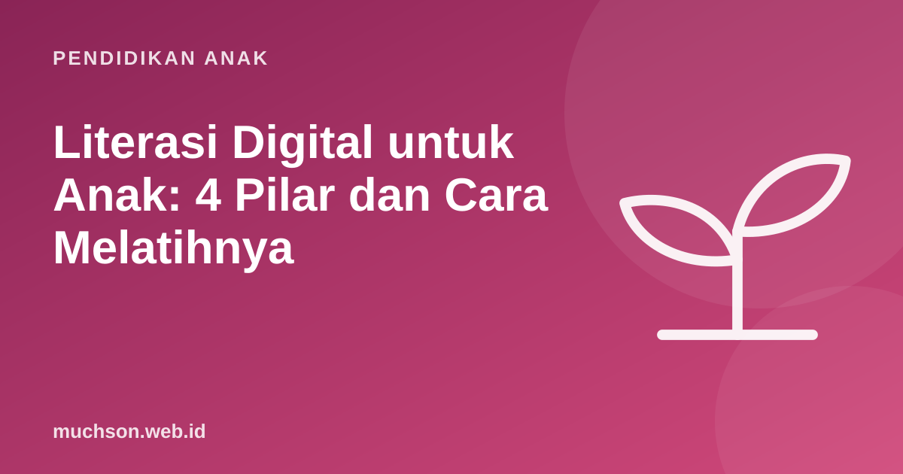

Beranda › Artikel › Pendidikan Anak
Pendidikan AnakLiterasi Digital untuk Anak: 4 Pilar dan Cara Melatihnya
Anak-anak sekarang sering disebut "digital native" karena lahir di era ponsel pintar. Tetapi lancar memakai aplikasi tidak sama dengan cakap digital. Banyak anak bisa mengunggah video dalam hitungan detik, tetapi belum bisa membedakan berita palsu, menjaga data pribadi, atau memahami bahwa aplikasi dirancang untuk menahan perhatian mereka.

Empat pilar literasi digital
Program literasi digital nasional di Indonesia memakai kerangka empat pilar. Kerangka ini berguna untuk orang tua sebagai daftar keterampilan yang perlu dilatih anak:
Pilar 1: cakap digital
Cakap digital bukan hanya bisa membuka aplikasi. Untuk anak SD, keterampilan pentingnya antara lain:
- Mencari informasi dengan kata kunci yang tepat, lalu memilih sumber yang tepercaya.
- Mengelola berkas: menyimpan, memberi nama, menemukan lagi.
- Membuat, bukan hanya mengonsumsi: menulis, menggambar, membuat presentasi, coding.
- Memahami cara kerja teknologi: aplikasi dibuat manusia, punya aturan, dan bisa salah.
Anak yang pernah membuat program sendiri lebih mudah memahami bahwa setiap aplikasi adalah buatan manusia dengan tujuan tertentu, termasuk tujuan membuat penggunanya betah berlama-lama. Pemahaman ini adalah inti literasi digital.
Pilar 2 dan 3: etika dan budaya digital
| Situasi | Pertanyaan untuk anak |
|---|---|
| Ingin mengunggah foto teman | "Sudah minta izin temanmu?" |
| Ingin berkomentar di video | "Apakah kamu akan mengatakannya langsung di depan orangnya?" |
| Memakai gambar dari internet untuk tugas | "Siapa pembuatnya? Sudah disebutkan sumbernya?" |
| Ikut ramai di grup kelas | "Apakah ini membuat orang lain sedih atau malu?" |
Pilar 4: aman digital
Mengenali hoaks: latihan untuk anak
Hoaks menyebar cepat di grup percakapan keluarga dan sekolah. Ajarkan anak "rem darurat" sebelum percaya atau membagikan:
Situs cek fakta seperti turnbackhoax.id dan cekfakta.com bisa dipakai bersama anak yang lebih besar untuk melihat bagaimana sebuah klaim diperiksa.
Literasi digital sesuai usia
| Usia | Fokus |
|---|---|
| 5-7 | Layar ditemani orang tua, kenal istilah "informasi pribadi", cerita bila takut |
| 8-10 | Mencari informasi dengan kata kunci, kata sandi, mengenali iklan, membuat karya digital sederhana |
| 11-12 | Cek fakta, jejak digital, etika berkomentar, mengenali manipulasi, privasi pengaturan aplikasi |
Dari keempat pilar, cakap digital paling efektif dilatih dengan berkarya. Saat anak membuat animasi atau game sendiri, ia belajar bahwa teknologi bisa dikendalikan, bukan hanya dikonsumsi. PixelKode menyediakan ruang berkarya itu dalam lingkungan tanpa iklan dan tanpa obrolan dengan orang asing.
Tanya jawab
Apa itu literasi digital untuk anak?
Apa saja empat pilar literasi digital?
Bagaimana mengajarkan anak mengenali hoaks?
Usia berapa mulai belajar literasi digital?
Sumber dan bacaan lanjut
- NU Online: pilar literasi digital (cakap, etika, budaya, aman digital)
- Komdigi: Tunaspedia, panduan pelindungan anak di ruang digital
- TurnBackHoax (Mafindo)
- CekFakta.com
- UNICEF: Cyberbullying, apa itu dan cara menghentikannya